帝国猟兵（女）
初めに
海外版の水着テレーズが可愛かった。
Jump into summer celebrations with a Global-Original Romancing Festival!
— Romancing SaGa Re;univerSe (@reuniverse_en) July 1, 2022
Grab new GLORG Styles SS [Hey! No Looking!] Katarina, SS [Buried in Sand] Emerald, and SS [You're My Prey Today] Therese!
Which #SaGaRS Summer Style are you adding to your roster? pic.twitter.com/hqn02TBPt3
仲間にしたい
帝国猟兵（女）はノーマッドの村の右下の家にいます。ボクオーンを倒した状態であれば、話しかければ仲間にすることができます。
皇帝にした時のセリフとか口調


ファティマ様、陛下


陣形
所持陣形は無し
能力値
帝国猟兵（女）は以下8名のキャラクタがいます。各キャラクタのステータス、閃き適正、初期技能（術、技）は以下表の通りです。
参考：ロマンシングサガ２ （ロマサガ２・romasaga2） 攻略の手引き > ノーマッド♂
| キャラ名 | 腕 | 器 | 魔 | 早 | 体 | LP | 理 | 術 | 魔+理 | WH | JH | 閃 | 術法 | 技能 |
|---|---|---|---|---|---|---|---|---|---|---|---|---|---|---|
 テレーズ | 13 | 20 | 15 | 16 | 14 | 10 | 10 | 25 | 25 | +2 | -6 | 弓 | 水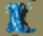 | 突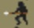 射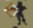 |
メアリー | 15 | 21 | 14 | 15 | 13 | 8 | 13 | 16 | 27 | +2 | -7 | 小剣 | なし | 射 |
アグネス | 14 | 20 | 17 | 16 | 12 | 6 | 12 | 27 | 29 | +1 | -5 | 弓 | 水 天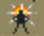 | 突 射 |
キャサリン | 13 | 22 | 15 | 15 | 14 | 7 | 11 | 23 | 26 | +2 | -7 | 弓 | なし | 射 |
アン | 16 | 20 | 14 | 15 | 13 | 9 | 12 | 18 | 26 | +1 | -4 | 弓 | 地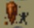 | 射 |
ユリアナ | 12 | 23 | 14 | 13 | 15 | 11 | 12 | 18 | 26 | +3 | -7 | 弓 | なし | 射 |
イザベラ | 14 | 21 | 19 | 14 | 12 | 7 | 10 | 37 | 29 | +1 | -1 | 弓 | 地 | 突 射 |
エリザベス | 13 | 22 | 15 | 13 | 15 | 8 | 12 | 21 | 27 | +2 | -7 | 弓 | なし | 射 |
| キャラ名 | 腕 | 器 | 魔 | 早 | 体 | LP | 理 | 術 | 魔+理 | WH | JH | 閃 | 術法 | 技能 |
※2 術：術威力（魔力 + max((魔力−理力), 0) × 2）。冥術以外の術、合成術のダメージに影響する。
※3 魔＋理：魔力＋理力。冥合成術の威力に影響する
※4 WH, JH：マスターレベルからの補正値（技と術）
※5 斬：剣・大剣、突：槍・小剣、殴：斧・棍棒、射：弓、体：体術
※6 閃：閃き適正。適正毎の閃き可能な技の一覧はこちら
全体的に器用さが高いため、弓や小剣の使用が向いている。小手や全身鎧を装備すると弓の命中率が下がるので注意したい。皆死ね矢の命中率が突（槍・小剣）Lvに依存するため、槍・小剣も使って育てておくと良い。
メアリーのみ閃き適正が小剣で、他のキャラクターは弓。
ユリアナは全キャラ中12位の器用さなので初期から仲間にできるキャラとしてはおすすめ（右のリンクのステータス一覧の「器」のところ参照）。
イザベラは宮廷魔術士並みに術威力が高い。突（槍・小剣）の技能も持っているため、青水晶の槍でサンダーボルトを使わせるのも良い。
サンダーボルトのダメージ計算は他の技・術と比べてちょっと特殊な計算になっています。ざっくり言うと、『術威力』と『槍のレベル』に依存しています。詳細は以下リンク先参照。
青水晶の槍固有技のサンダーボルト
帝国猟兵（女）キャラクター名の由来は「西洋の女帝」です。キャラクタ毎の由来は各キャラの項目を参照してください。
ここから先は、キャラクタ毎にロマサガ2、エンペラーズサガ（エンサガ）、インペリアルサガ（旧インサガ）、インペリアルサガエクリプス（インサガEC）、ロマサガRSでの各キャラクタについて見ていきます。
テレーズ


ステータス

名前の由来
千夜一夜物語に登場する、カイロの靴直し職人マアルフの妻の名前がファティマー／ファーティマ、だったり、王女ファーティマという名前が出てきたりするのでたぶんここがファティマの名前の由来なんだと思います。
参考：
- Wikipedia 千夜一夜物語のあらすじ：蜂蜜入りの乱れ髪菓子と靴直しの禍をまきちらす女房との物語（第959夜 - 第971夜） 靴直しのマアルフとその女房ファティマー
- Wikipedia 千夜一夜物語のあらすじ：王女ファーティマと詩人ムラキースとの恋の冒険
エンサガ
エンサガでは弓キャラとして実装。
原作のロマサガ2では公式イラストは無かったが、小林智美さんの描き下ろしイラストで実装された。
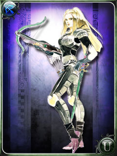
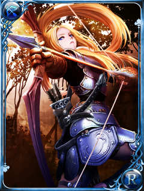
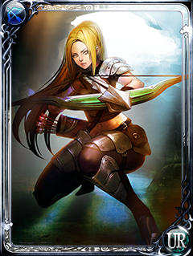
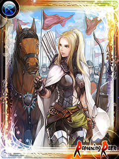
参考：
- エンサガDB：戦士一覧 テレーズで検索した結果
旧インサガ
未プレイなのでよく知りませんが、エンサガのイラストで実装されている。
【強化キャラクター紹介】テレーズ
— インペリアル サガ 運営公式 (@Imperial_SaGa) November 15, 2017
バレンヌ帝国軍の「帝国猟兵」の一員で、機動力と弓の扱いに優れ、援護を担う帝国猟兵の鑑とも言うべき堅実な忠臣。未熟なジェラール皇子を守る陣形・インペリアルクロスの重要な一翼を任された。 #インサガ pic.twitter.com/ywp8U0ma6F
参考：
インサガEC
未プレイなのでよく知りませんが、エンサガのイラストで実装されている。
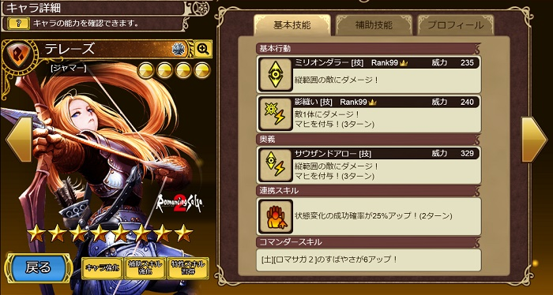
ロマサガRS
ロマサガRSでは、2019年3月に開催された七英雄ピックアップガチャ ボクオーン編でノーマッド（女）が実装されました。

Aスタイルのイラストはエンサガと同様のもの。ドットはロマサガRS用に新規に作られており、ロマサガ2のドットを踏襲して作られている。
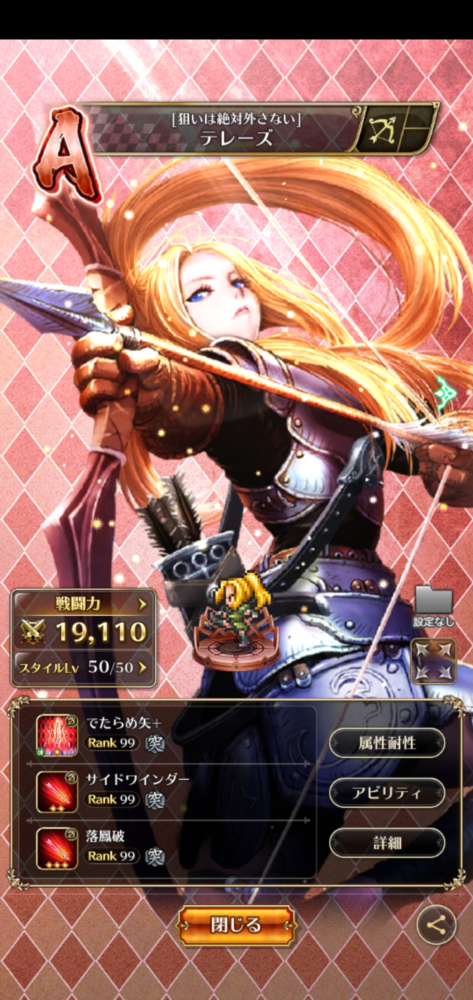
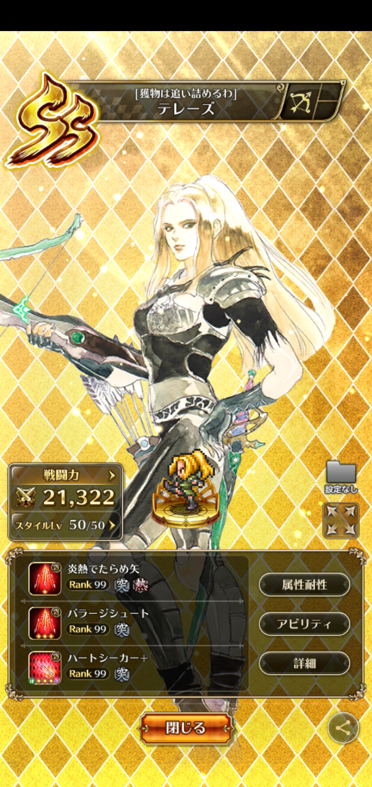
【新スタイル紹介】
— ロマンシング サガ リ・ユニバース公式 (@romasaga_rs) March 21, 2019
ファティマ（『ロマンシング サガ２』より）
ステップの遊牧民"ノーマッド（女）"の一人。
弓矢による遠距離攻撃を得意とする。
「思い切り走り回れる広い草原はないのか？」#ロマサガRS pic.twitter.com/xqC3hnwcoa
| 使用可能技 |
|---|
| でたらめ矢 |
| サイドワインダー |
| 落鳳破 |
| バラージシュート |
| ハートシーカー |
ロマサガRSの狙い撃ち、ビーストスレイヤー、瞬速の矢のエフェクトかこんな感じ。
ロマサガRSのホーム画面でタップした時のセリフ


メアリー


ステータス

名前の由来
- ベスマ：不明
エンサガ
エンサガでは弓キャラとして実装。
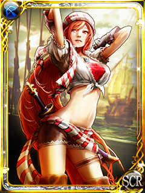
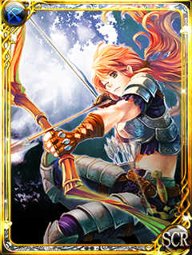
参考：
- エンサガDB：戦士一覧 メアリーで検索した結果
アグネス
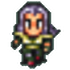 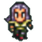 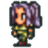 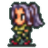 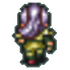 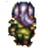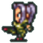 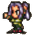 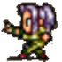 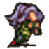 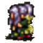 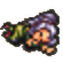


ステータス

名前の由来
- アリア：不明
原作以外の実装なし
キャサリン


ステータス

名前の由来
- ミズラ：不明
原作以外の実装なし
アン


ステータス

名前の由来
千夜一夜物語の「アズィーズとアズィーザと美しき王冠太子の物語」に登場。
参考：
- アズィーザ：アズィーズとアズィーザと美わしき王冠太子の物語
原作以外の実装なし
ユリアナ


ステータス

名前の由来
千夜一夜物語の「ドニヤ姫と王冠太子の物語」に登場。
参考：
- ドニヤ：ドニヤ姫と王冠太子の物語
原作以外の実装なし
イザベラ


ステータス

名前の由来
千夜一夜物語の「オマル・アル・ネマーン王とそのいみじき二人の王子シャールカーンとダウールマカーンとの軍物語」内の「ドニヤ姫と王冠太子の物語」に登場。
参考：
原作以外の実装なし
エリザベス


ステータス

名前の由来
千一夜物語全体の主人公。
参考：
- Wikipedia 千夜一夜物語のあらすじ：シャハリヤール王と弟シャハザマーン王との物語
- Wikipedia シャハラザード：シャハラザード（シェヘラザード）
エンサガ

斧キャラとして実装
参考：
| 使用可能技 |
|---|
| ドライブエッジ |
| ヨーヨー |
| メガホーク |
| スカイドライブ |
次の動画はロマサガ2のヨーヨー、スカイドライブのエフェクトです。ドライブエッジはロマサガ2にはなかった技。エンサガ初登場？メガホークはロマサガ3の技。
参考